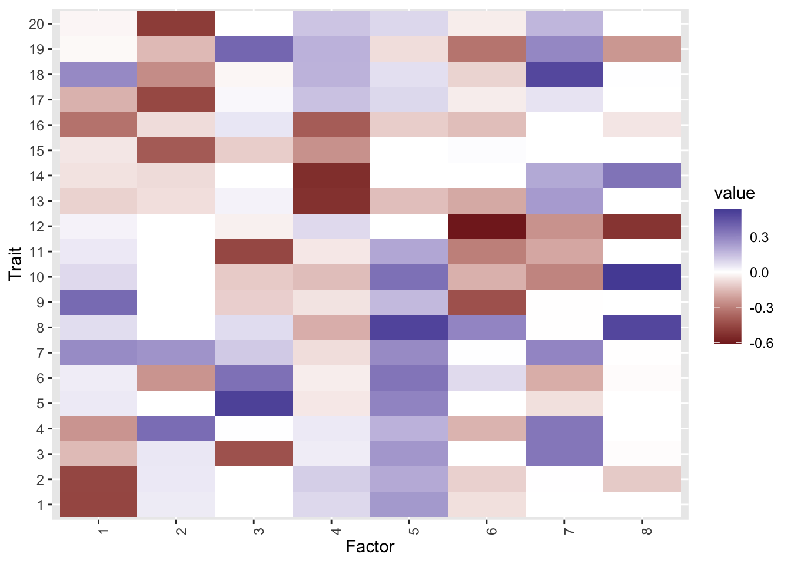
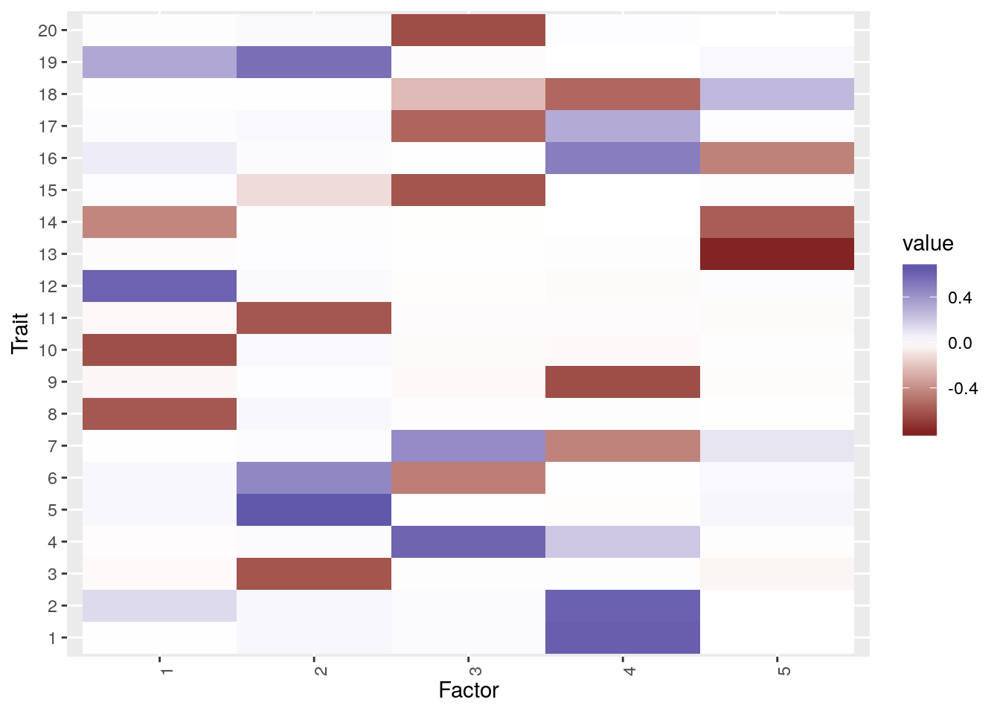
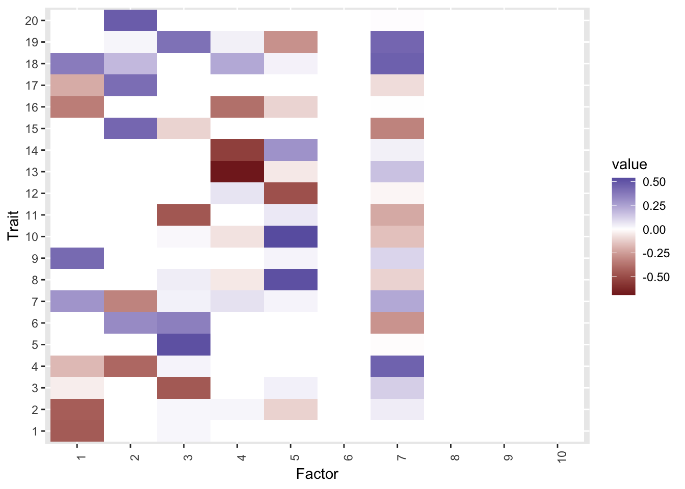
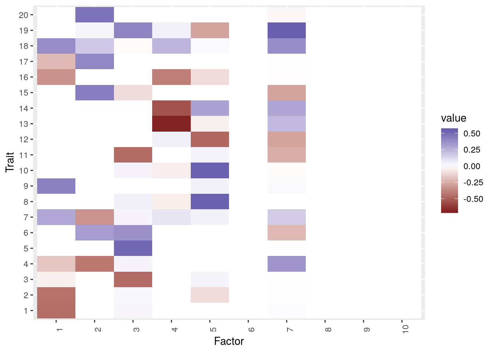
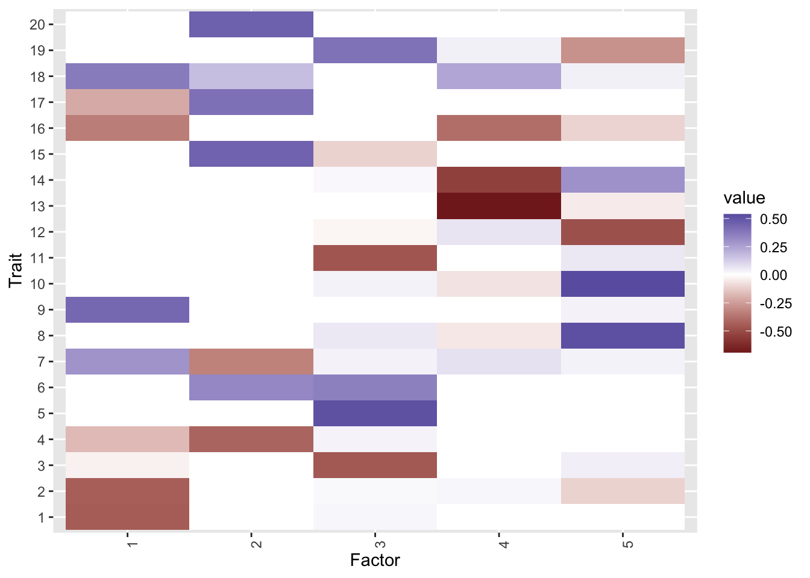

Last updated: 2020-06-08
Checks: 6 1
Knit directory: sumstatFactors/
This reproducible R Markdown analysis was created with workflowr (version 1.6.2). The Checks tab describes the reproducibility checks that were applied when the results were created. The Past versions tab lists the development history.
Great! Since the R Markdown file has been committed to the Git repository, you know the exact version of the code that produced these results.
Great job! The global environment was empty. Objects defined in the global environment can affect the analysis in your R Markdown file in unknown ways. For reproduciblity it’s best to always run the code in an empty environment.
The command set.seed(20190819) was run prior to running the code in the R Markdown file. Setting a seed ensures that any results that rely on randomness, e.g. subsampling or permutations, are reproducible.
Great job! Recording the operating system, R version, and package versions is critical for reproducibility.
To ensure reproducibility of the results, delete the cache directory fixed_factors2_cache and re-run the analysis. To have workflowr automatically delete the cache directory prior to building the file, set delete_cache = TRUE when running wflow_build() or wflow_publish().
Great job! Using relative paths to the files within your workflowr project makes it easier to run your code on other machines.
Great! You are using Git for version control. Tracking code development and connecting the code version to the results is critical for reproducibility.
The results in this page were generated with repository version 0a109f1. See the Past versions tab to see a history of the changes made to the R Markdown and HTML files.
Note that you need to be careful to ensure that all relevant files for the analysis have been committed to Git prior to generating the results (you can use wflow_publish or wflow_git_commit). workflowr only checks the R Markdown file, but you know if there are other scripts or data files that it depends on. Below is the status of the Git repository when the results were generated:
Ignored files:
Ignored: .Rhistory
Ignored: .Rproj.user/
Ignored: analysis/fixed_factors2_cache/
Ignored: analysis/fixed_factors_cache/
Ignored: analysis/metabo_flash_experiments_cache/
Ignored: analysis/pathway_factors_cache/
Ignored: analysis/simulations_cache/
Ignored: analysis/z_scores_cache/
Untracked files:
Untracked: R/est_R_pairwise.R
Untracked: analysis/2020-04-28-meeting_notes.Rmd
Untracked: analysis/literature.Rmd
Untracked: analysis/sample_corr2.Rmd
Untracked: analysis/sumstat_factors.bib
Untracked: astle_blood_cell.png
Untracked: bcai_fitev_Inf_100_X_TRUE_100.png
Untracked: bcai_fitev_Inf_100_ev_TRUE_100.png
Untracked: bcai_fitev_Inf_100_naive_TRUE_100.png
Untracked: buttons.css
Untracked: bw_factors2.png
Untracked: code/flashier_compare.R
Untracked: code/flashier_compare_jason.R
Untracked: code/hide_output.js
Untracked: code/mask_flashier.R
Untracked: code/mask_flashr.R
Untracked: covariance_scratch.R
Untracked: for_jason/
Untracked: k99_analysis.R
Untracked: k99_fit.RDS
Untracked: man/sim_sumstats_lf.Rd
Untracked: simulate_1.rds
Untracked: simulate_2.rds
Unstaged changes:
Modified: DESCRIPTION
Modified: NAMESPACE
Modified: R/package.R
Modified: R/sim_sumstats_lf.R
Modified: man/mask_and_fit.Rd
Modified: man/sumstatFactors.Rd
Note that any generated files, e.g. HTML, png, CSS, etc., are not included in this status report because it is ok for generated content to have uncommitted changes.
These are the previous versions of the repository in which changes were made to the R Markdown (analysis/fixed_factors2.Rmd) and HTML (docs/fixed_factors2.html) files. If you’ve configured a remote Git repository (see ?wflow_git_remote), click on the hyperlinks in the table below to view the files as they were in that past version.
| File | Version | Author | Date | Message |
|---|---|---|---|---|
| Rmd | 0a109f1 | Jean Morrison | 2020-06-08 | wflow_publish(“analysis/fixed_factors2.Rmd”) |
I am revisiting the idea of using fixed factors to account for sample correlation. In previous attempts, that approach didn’t work. Maybe the algorithm is not converging to the correct local minimum? However, the method has several advantages over the eigenvector transformaiton: 1) It is easier to deal with missing data and 2) We preserve sparsity assumptions about \(F\). So I am going to try another attempt where 1) the fixed factors are scaled so that the associated loadings are all \(N(0, 1)\) and second I will try a two stage fit, fitting the fixed factors and then estimating factors in the residuals.
A reminder of the model: If
\[ Z = LF^\top + E \] Let \(\lambda_{min}\) be the smallest eigenvalue of \(\Sigma\) and \(\Sigma - \lambda_{min}I = V DV^\top\)
\[ E = AW^\top + E_1 \]
where elements of \(E_1\) are iid N\((0, \lambda_{min})\), the elements of \(A\) are iid \(N(0, 1)\) and \(A = V D^{1/2}\). I will try fitting on a couple examples.
knitr::opts_chunk$set(autodep = TRUE)
library(dplyr)
Attaching package: 'dplyr'The following objects are masked from 'package:stats':
filter, lagThe following objects are masked from 'package:base':
intersect, setdiff, setequal, unionlibrary(sumstatFactors)Warning: replacing previous import 'intervals::reduce' by 'purrr::reduce' when
loading 'sumstatFactors'library(flashier)
library(ggplot2)Generate some data and fit using eigenvector transformation method and navie method for comparison.
F_mat <- readRDS("analysis_data/factors2.RDS")
F_mat[13,3] <- 0.3
set.seed(1)
R1 <- matrix(0.7, nrow=4, ncol=4)
diag(R1) <- 1
R_E <- Matrix::bdiag(R1, R1, R1, R1, R1) %>% as.matrix()
dat <- sim_sumstats_lf(F_mat = F_mat, N = 10000, J = 10000,
h_2_trait = rep(0.3, 20), omega = rep(1, 20), h_2_factor = rep(0.8, 5),
pi_L = rep(0.1, 5), pi_theta = 0, R_E = R_E)
#dat <- readRDS("dat.RDS")fitn <- fit_naive(dat)Adding factor 1 to flash object...
Adding factor 2 to flash object...
Adding factor 3 to flash object...
Adding factor 4 to flash object...
Adding factor 5 to flash object...
Adding factor 6 to flash object...
Adding factor 7 to flash object...
Adding factor 8 to flash object...
Adding factor 9 to flash object...
Factor doesn't significantly increase objective and won't be added.
Wrapping up...
Done.
Backfitting 8 factors (tolerance: 2.98e-03)...
Difference between iterations is within 1.0e+01...
Difference between iterations is within 1.0e+00...
Difference between iterations is within 1.0e-01...
Difference between iterations is within 1.0e-02...
Wrapping up...
Done.
Nullchecking 8 factors...
Done.fitev <- fit_transformed(dat, cov2cor(dat$Sigma))Adding factor 1 to flash object...
Adding factor 2 to flash object...
Adding factor 3 to flash object...
Adding factor 4 to flash object...
Adding factor 5 to flash object...
Adding factor 6 to flash object...
Factor doesn't significantly increase objective and won't be added.
Wrapping up...
Done.
Backfitting 5 factors (tolerance: 2.98e-03)...
Difference between iterations is within 1.0e+02...
Difference between iterations is within 1.0e+01...
Difference between iterations is within 1.0e+00...
Difference between iterations is within 1.0e-01...
Difference between iterations is within 1.0e-02...
Difference between iterations is within 1.0e-03...
Wrapping up...
Done.
Nullchecking 5 factors...
Done.plot_factors(fitn$F_hat, 1:20)
plot_factors(fitev$F_hat, 1:20)
cor(fitn$F_hat, dat$F_mat) [,1] [,2] [,3] [,4] [,5]
[1,] -0.01204722 0.14002207 -0.29450841 -0.958242620 -0.09620106
[2,] 0.96045739 0.04605195 0.01892673 0.027470383 0.12820930
[3,] -0.01745420 -0.11551098 0.02051216 0.032081447 -0.97122295
[4,] -0.09794199 -0.43320098 -0.84187360 -0.004581021 -0.08057724
[5,] 0.16919900 0.51280697 -0.53524362 -0.066065161 0.02095888
[6,] -0.20691246 0.62722895 -0.02695702 0.140587440 -0.06245062
[7,] 0.21776278 -0.06171218 0.04479653 -0.262090863 0.05392528
[8,] 0.02484825 0.99893273 0.13634856 -0.080107382 0.10400442cor(fitev$F_hat, dat$F_mat) [,1] [,2] [,3] [,4] [,5]
[1,] -0.04551064 -0.99824107 -0.14864823 0.089895532 -0.154471429
[2,] -0.06065079 -0.10994025 -0.01720328 0.012773159 -0.999584410
[3,] 0.99931383 0.01675207 0.09402859 -0.008956096 0.064573181
[4,] -0.04834907 -0.07718953 0.24606692 0.999701263 0.005086838
[5,] -0.09964846 -0.15481632 -0.99799245 -0.233942310 -0.065682614The eigenvector transsformation fit is clearly much better than the naive fit. This can also be seen in the RRMSE for estimated \(Z\).
B = with(dat, L_mat %*% t(F_mat) + theta)
sqrt(sum((fitn$B_hat-B)^2)/sum(B^2))[1] 130.8834sqrt(sum((fitev$B_hat-B)^2)/sum(B^2))[1] 83.22996Now fitting with fixed factors. We have found that the order of adding the fixed factors matters and whether you perform two back fits or one also matters. Also using method = sequential seems to work better than extrapolate.
Backfitting only the fixed factors first gives the ridge regression solution since the fixed factors have a normal prior:
R <- cov2cor(dat$Sigma)
ntrait <- ncol(dat$beta_hat)
nvar <- nrow(dat$beta_hat)
R_eig <- eigen(R)
lambda_min <- min(R_eig$values)
W <- R - lambda_min*diag(rep(1, ntrait))
W_eig <- eigen(W)
Z <- with(dat, beta_hat/se_beta_hat)
V <- W_eig$vectors[, -ntrait]
a <- sqrt(W_eig$values[-ntrait])
Vstar <- V %*% diag(a)
#Ridge solution
Lstar <- diag(1/(a^2 + lambda_min))%*%t(Vstar)%*%t(Z) %>% t()
#flash solution
fit0 <- flash.init(Z, S =sqrt(lambda_min), var.type = NULL) %>%
flash.init.factors(., EF = list(Lstar, Vstar), prior.family = prior.normal(scale= 1)) %>%
flash.fix.loadings(., kset = 1:19, mode=2) %>%
flash.backfit()Backfitting 19 factors (tolerance: 2.98e-03)...
Wrapping up...
Done.fit0$elbo[1] -240426.7#ridge solution and flash solution are identical
cor(as.vector(Lstar %*% t(Vstar)), as.vector(fitted(fit0)))[1] 1If we then add additional factors, none are added. My hypothesis is that flash is stuck in a local minimum (note that here var.type=2 rather than NULL so the first backfit doesn’t yield exactly the ridge solution.
fit1 <- flash.init(Z, S =sqrt(lambda_min), var.type = 2) %>%
flash.init.factors(., EF = list(Lstar, Vstar), prior.family = prior.normal(scale= 1)) %>%
flash.fix.loadings(., kset = 1:19, mode=2) %>%
flash.backfit() %>%
flash.add.greedy() %>%
flash.backfit()Backfitting 19 factors (tolerance: 2.98e-03)...
Difference between iterations is within 1.0e+01...
Difference between iterations is within 1.0e+00...
Difference between iterations is within 1.0e-01...
Difference between iterations is within 1.0e-02...
Wrapping up...
Done.
Adding factor 20 to flash object...
Factor doesn't significantly increase objective and won't be added.
Wrapping up...
Done.
Backfitting 19 factors (tolerance: 2.98e-03)...
Wrapping up...
Done.If we don’t backfit first and just randomly initialize the fixed factors and then add greedy factors we get only one additional factor and the elbo is slightly lower than the ridge solution. The one recovered factor corresponds the the fourth true factor.
set.seed(1)
L_rand <- matrix(rnorm(n=nvar*(ntrait-1)), nrow=nvar, ncol=(ntrait-1))
fit2 <- flash.init(Z, S =sqrt(lambda_min), var.type = 2) %>%
flash.init.factors(., EF = list(L_rand, Vstar), prior.family = prior.normal(scale= 1)) %>%
flash.fix.loadings(., kset = 1:19, mode=2) %>%
flash.add.greedy() %>%
flash.backfit(method="sequential", verbose.lvl=0)Adding factor 20 to flash object...
Wrapping up...
Done.fit2$elbo[1] -241272.9F_hat <- fit2$loadings.pm[[2]][,-(1:(ntrait-1))]
cor(F_hat, dat$F_mat) [,1] [,2] [,3] [,4] [,5]
[1,] -0.01211156 0.1126366 -0.2524863 -0.9957512 -0.05749441However, if we add the greedy factors first and then the fixed factors, we get a better solution in terms of factor recovery. The elbo is slightly worse than the fit that came up with only one factor and which we started at the ridge solution. The RRMSE is slightly worse than the RRMSE from the eigenvector transformed solution but not as bad as the RRMSE from the naive solution.
set.seed(2)
fit3 <- flash.init(Z, S = sqrt(lambda_min), var.type = 2) %>%
flash.add.greedy(Kmax = 10, init.fn = init.fn.default )Adding factor 1 to flash object...
Adding factor 2 to flash object...
Adding factor 3 to flash object...
Adding factor 4 to flash object...
Adding factor 5 to flash object...
Adding factor 6 to flash object...
Adding factor 7 to flash object...
Adding factor 8 to flash object...
Adding factor 9 to flash object...
Adding factor 10 to flash object...
Wrapping up...
Done.n <- fit3$n.factors
fit3 <- fit3 %>%
flash.init.factors(., EF = list(L_rand, Vstar), prior.family = prior.normal(scale= 1)) %>%
flash.fix.loadings(., kset = n + 1:(ntrait-1), mode=2) %>%
flash.backfit(method = "sequential", verbose.lvl=0)
fit3$elbo[1] -241767.1F_hat <- fit3$loadings.pm[[2]][,1:n]
plot_factors(F_hat, 1:20)
cor(F_hat, dat$F_mat)Warning in cor(F_hat, dat$F_mat): the standard deviation is zero [,1] [,2] [,3] [,4] [,5]
[1,] 0.01327836 0.07985570 -0.22672173 -0.998562054 -0.02495756
[2,] -0.99878351 -0.03255963 -0.10003963 0.033418208 -0.06897625
[3,] -0.02542984 -0.08634439 -0.03265362 0.004158651 -0.99722493
[4,] -0.08514346 -0.26641049 -0.99101674 -0.219016147 -0.02772259
[5,] 0.03082532 0.99119136 0.03049712 -0.131763066 0.16998646
[6,] NA NA NA NA NA
[7,] 0.53927234 -0.25822636 -0.05571600 -0.253712129 -0.16020151
[8,] NA NA NA NA NA
[9,] NA NA NA NA NA
[10,] NA NA NA NA NAfixed_ix <- n + (1:(ntrait-1))
B_hat <- fitted(fit3) - with(fit3, loadings.pm[[1]][, fixed_ix]%*%diag(loadings.scale[fixed_ix])%*% t(loadings.pm[[2]][, fixed_ix]))
sqrt(sum((B_hat-B)^2)/sum(B^2))[1] 97.28984Trying a different seed
set.seed(2000)
fit3 <- flash.init(Z, S = sqrt(lambda_min), var.type = 2) %>%
flash.add.greedy(Kmax = 10, init.fn = init.fn.default )Adding factor 1 to flash object...
Adding factor 2 to flash object...
Adding factor 3 to flash object...
Adding factor 4 to flash object...
Adding factor 5 to flash object...
Adding factor 6 to flash object...
Adding factor 7 to flash object...
Adding factor 8 to flash object...
Adding factor 9 to flash object...
Adding factor 10 to flash object...
Wrapping up...
Done.n <- fit3$n.factors
fit3 <- fit3 %>%
flash.init.factors(., EF = list(L_rand, Vstar), prior.family = prior.normal(scale= 1)) %>%
flash.fix.loadings(., kset = n + 1:(ntrait-1), mode=2) %>%
flash.backfit(method = "sequential", verbose.lvl=0)
fit3$elbo[1] -241767.1F_hat <- fit3$loadings.pm[[2]][,1:n]
plot_factors(F_hat, 1:20)
cor(F_hat, dat$F_mat)Warning in cor(F_hat, dat$F_mat): the standard deviation is zero [,1] [,2] [,3] [,4] [,5]
[1,] 0.01327836 0.07985570 -0.22672173 -0.998562054 -0.02495756
[2,] -0.99878351 -0.03255963 -0.10003963 0.033418208 -0.06897625
[3,] -0.02542984 -0.08634439 -0.03265362 0.004158651 -0.99722493
[4,] -0.08514346 -0.26641049 -0.99101674 -0.219016147 -0.02772259
[5,] 0.03082532 0.99119136 0.03049712 -0.131763066 0.16998646
[6,] NA NA NA NA NA
[7,] 0.53927234 -0.25822636 -0.05571600 -0.253712129 -0.16020151
[8,] NA NA NA NA NA
[9,] NA NA NA NA NA
[10,] NA NA NA NA NAfixed_ix <- n + (1:(ntrait-1))
B_hat <- fitted(fit3) - with(fit3, loadings.pm[[1]][, fixed_ix]%*%diag(loadings.scale[fixed_ix])%*% t(loadings.pm[[2]][, fixed_ix]))
sqrt(sum((B_hat-B)^2)/sum(B^2))[1] 97.28984Adding only 5 (the correct number) of greedy factors:
set.seed(2)
fit4 <- flash.init(Z, S = sqrt(lambda_min), var.type = 2) %>%
flash.add.greedy(Kmax = 5, init.fn = init.fn.default )Adding factor 1 to flash object...
Adding factor 2 to flash object...
Adding factor 3 to flash object...
Adding factor 4 to flash object...
Adding factor 5 to flash object...
Wrapping up...
Done.n <- fit4$n.factors
fit4 <- fit4 %>%
flash.init.factors(., EF = list(L_rand, Vstar), prior.family = prior.normal(scale= 1)) %>%
flash.fix.loadings(., kset = n + 1:(ntrait-1), mode=2) %>%
flash.backfit(method = "sequential", verbose.lvl=0)
fit4$elbo[1] -241671.9F_hat <- fit4$loadings.pm[[2]][,1:n]
plot_factors(F_hat, 1:20)
cor(F_hat, dat$F_mat) [,1] [,2] [,3] [,4] [,5]
[1,] 0.01850519 0.07883172 -0.22917167 -0.999003742 -0.02167474
[2,] -0.99987884 -0.02390771 -0.09077861 0.038495335 -0.05978359
[3,] -0.02243445 -0.05229457 -0.02085770 0.001647753 -0.99612115
[4,] -0.08601906 -0.26337511 -0.99150005 -0.222693491 -0.02803516
[5,] 0.03202068 0.99086146 0.03152872 -0.137075886 0.17319838fixed_ix <- n + (1:(ntrait-1))
B_hat <- fitted(fit4) - with(fit4, loadings.pm[[1]][, fixed_ix]%*%diag(loadings.scale[fixed_ix])%*% t(loadings.pm[[2]][, fixed_ix]))
sqrt(sum((B_hat-B)^2)/sum(B^2))[1] 97.04889
sessionInfo()R version 3.6.3 (2020-02-29)
Platform: x86_64-apple-darwin15.6.0 (64-bit)
Running under: macOS Catalina 10.15.4
Matrix products: default
BLAS: /Library/Frameworks/R.framework/Versions/3.6/Resources/lib/libRblas.0.dylib
LAPACK: /Library/Frameworks/R.framework/Versions/3.6/Resources/lib/libRlapack.dylib
locale:
[1] en_US.UTF-8/en_US.UTF-8/en_US.UTF-8/C/en_US.UTF-8/en_US.UTF-8
attached base packages:
[1] stats graphics grDevices utils datasets methods base
other attached packages:
[1] ggplot2_3.3.0 flashier_0.2.4
[3] sumstatFactors_0.0.0.9000 dplyr_0.8.5
[5] workflowr_1.6.2
loaded via a namespace (and not attached):
[1] tidyselect_1.0.0 xfun_0.12 ashr_2.2-50 purrr_0.3.3
[5] reshape2_1.4.3 lattice_0.20-38 colorspace_1.4-1 vctrs_0.2.4
[9] htmltools_0.4.0 yaml_2.2.1 rlang_0.4.5 mixsqp_0.3-43
[13] later_1.1.0.1 pillar_1.4.3 withr_2.1.2 glue_1.4.1
[17] DBI_1.1.0 lifecycle_0.2.0 plyr_1.8.6 stringr_1.4.0
[21] munsell_0.5.0 gtable_0.3.0 codetools_0.2-16 evaluate_0.14
[25] labeling_0.3 knitr_1.28 httpuv_1.5.4 invgamma_1.1
[29] irlba_2.3.3 parallel_3.6.3 Rcpp_1.0.4.6 readr_1.3.1
[33] promises_1.1.0 backports_1.1.5 scales_1.1.0 truncnorm_1.0-8
[37] farver_2.0.3 fs_1.3.2 RMySQL_0.10.20 hms_0.5.3
[41] digest_0.6.25 stringi_1.4.6 ebnm_0.1-24 grid_3.6.3
[45] rprojroot_1.3-2 tools_3.6.3 magrittr_1.5 tibble_2.1.3
[49] crayon_1.3.4 whisker_0.4 pkgconfig_2.0.3 MASS_7.3-51.5
[53] Matrix_1.2-18 SQUAREM_2020.3 assertthat_0.2.1 rmarkdown_2.1
[57] R6_2.4.1 intervals_0.15.2 git2r_0.27.1 compiler_3.6.3